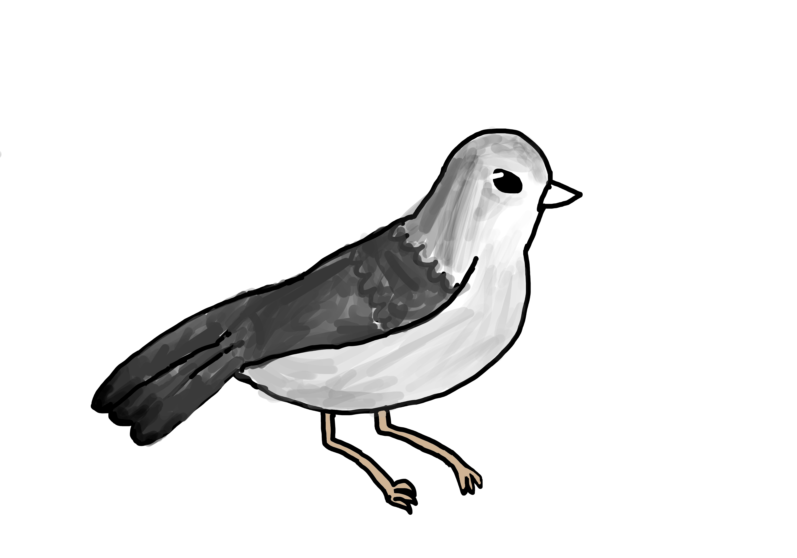

Your feeds. Your reading. Your words.
Mastodon, Bluesky and RSS in one familiar home
A browser client for your social feeds, reading list and writing. Try the app preview, or connect your own account.

Core Mastodon features
Read timelines, follow tags and lists, join conversations and discover people with starter collections.
Readability features
Follow RSS, keep bookmarks and open supported articles in a focused reading view.
Creators: writing and drafts
Keep your ideas in drafts and use writing and publishing tools when enabled.
Advanced user features
Manage accounts with bulk actions, third-party connections and network diagnostics.